Crust
& Split
Два вкуса. Один хруст.
Бренд районной пекарни строится вокруг простого действия: разломить горячую лепёшку, увидеть начинку и собрать две разные половины в одном заказе.
Выделить новый формат среди привычной уличной еды.
Небольшая команда открывает точку с печью, несколькими местами и окном выдачи. Айдентика должна объяснять продукт ещё с улицы, меню — сокращать время выбора, а цифровой сценарий — приводить к конкретному времени самовывоза.
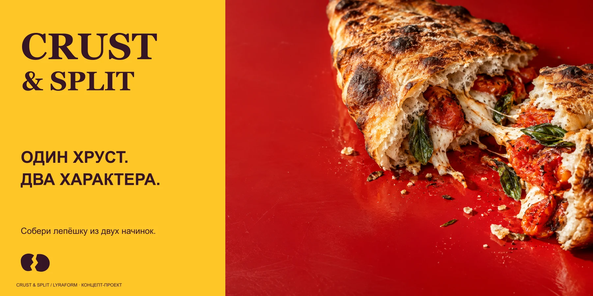
Разлом становится не украшением, а правилом всей системы.
Знак состоит из двух частей, упаковка раскрывается двумя створками, а заказ собирается из пары начинок. Контрастный красный, жёлтый и сливовый делают продукт заметным, а крупная типографика сохраняет ясность на любом масштабе.
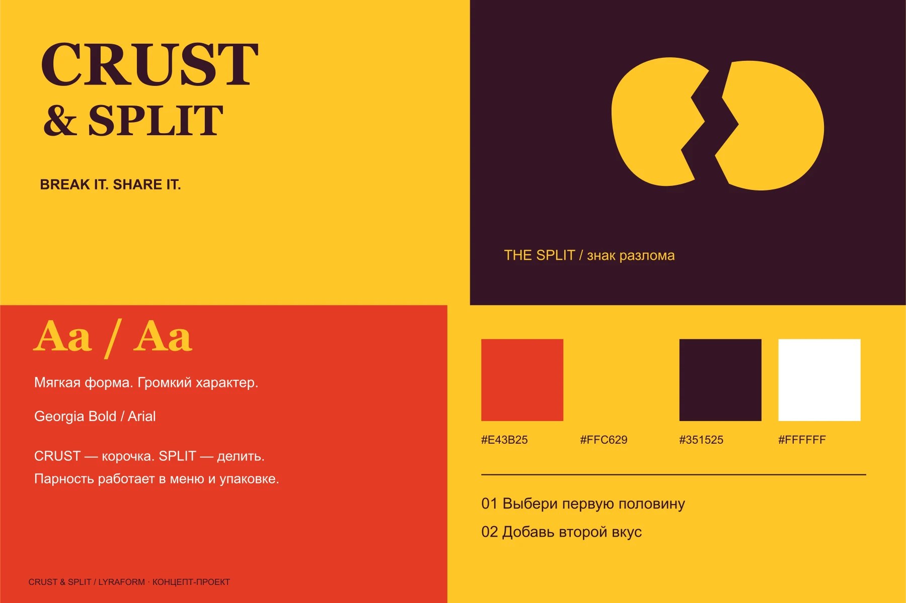
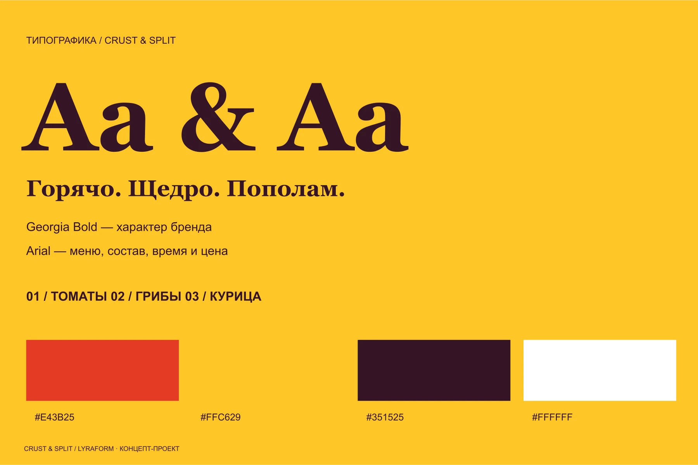
Собрать пару, выбрать время, забрать горячим.
На большом экране продукт и выбор начинок находятся рядом. Мобильный путь разбит на три ясных шага, а финальное подтверждение объясняет, что делать у окна выдачи.
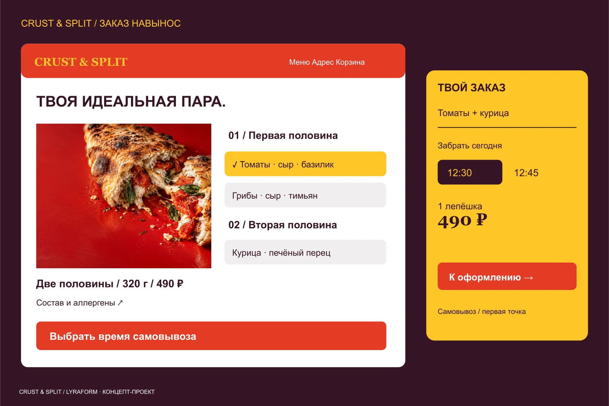
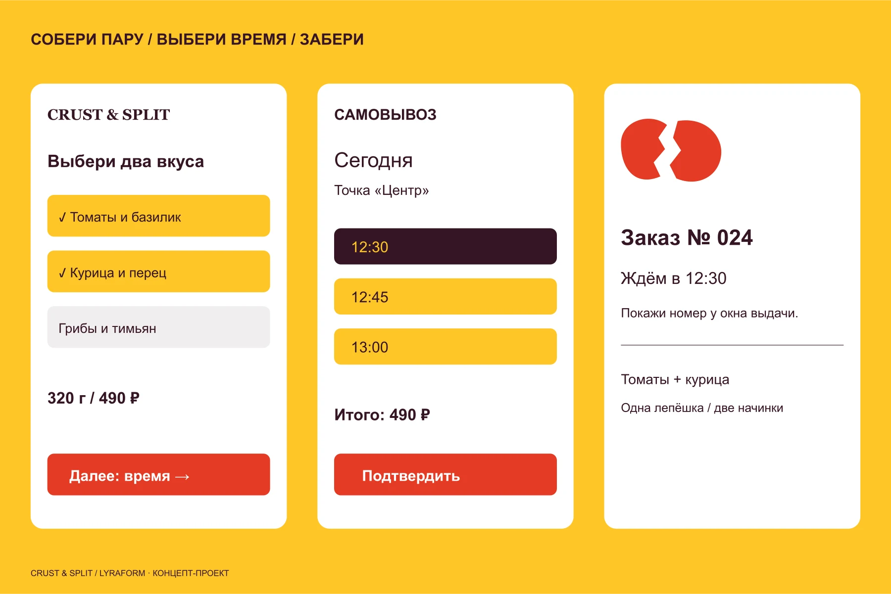
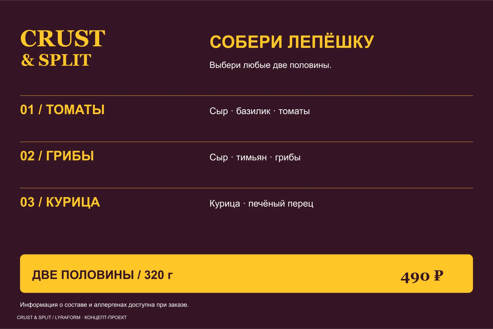
Один принцип связывает коробку, фасад и запуск.
Две створки коробки продолжают механику продукта. Вывеска и окно самовывоза объясняют формат прохожему, а рекламная серия последовательно говорит об аппетите, выборе пары и удобстве получения.
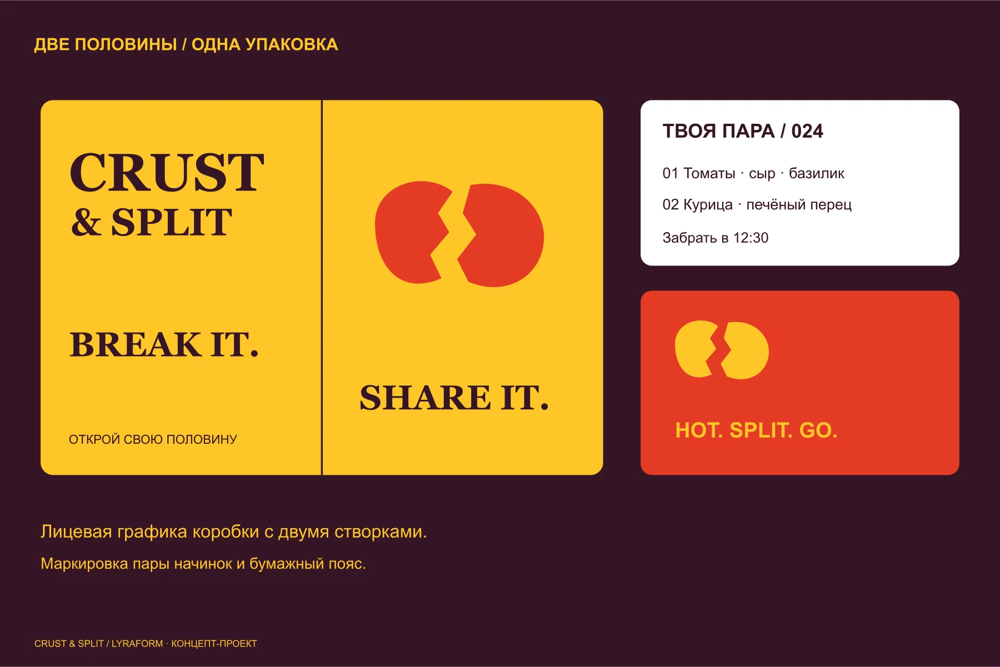
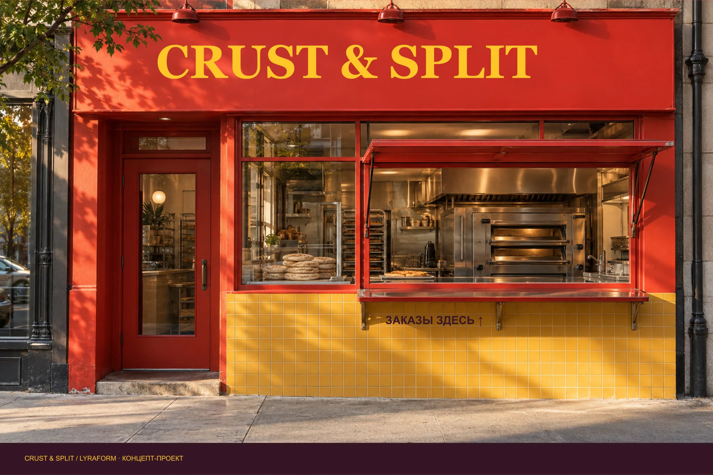
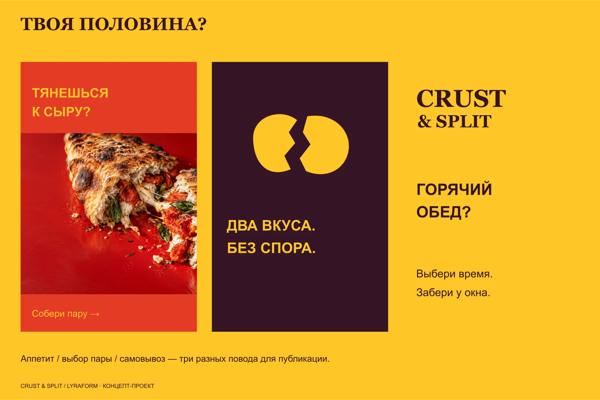
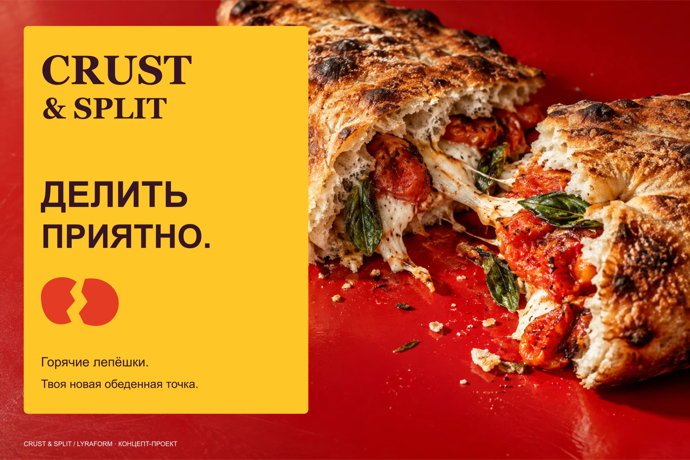
Целая форма раскрывается по линии разлома.
Короткая заставка собирает знак из двух половин, показывает сообщение и фиксирует имя бренда. При отключённой анимации система сохраняет выразительность в финальном статичном кадре.
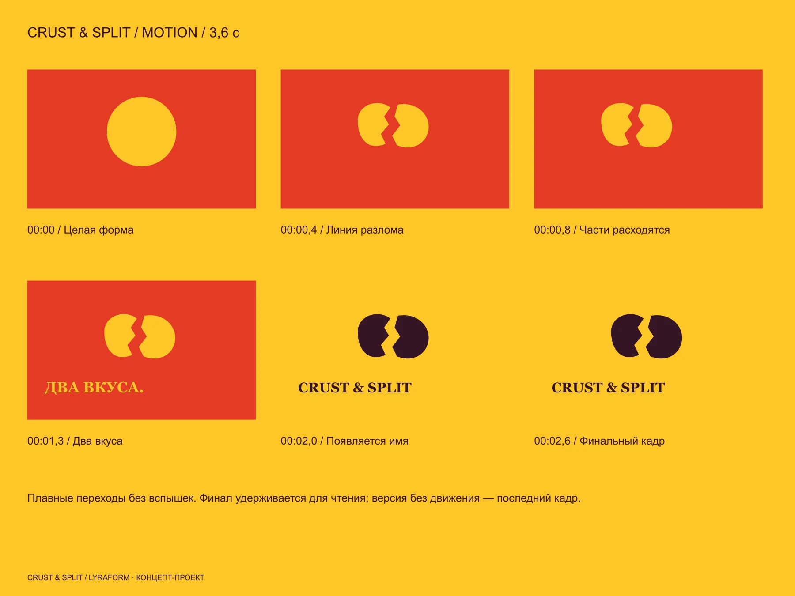
CRUST & SPLIT — вымышленный концепт-проект LYRAFORM. Он демонстрирует подход к брендингу, digital-сценарию и запуску, но не представляет реального клиента или коммерческие результаты.